Day 2 - Basic plotting and Tidy data
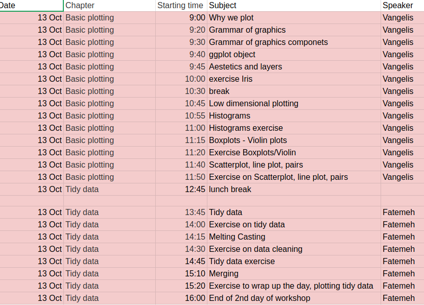
Vangelis Theodorakis, Fatemeh Behjati, Julien Gagneur, Marcel Schultz
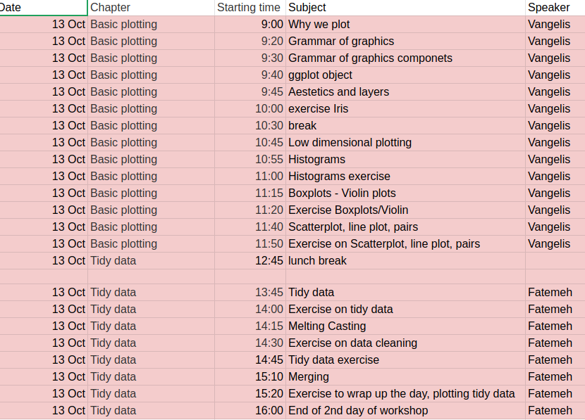


It is nearly impossible for a single person to go through data line-by-line and see distinct patterns and make observations.
Data visualization becomes crucial for gaining insight into data that traditional descriptive statistics cannot.
Plotting can give hints about bugs in our code (or even in the data!) and can help us to develop and improve methods and models.
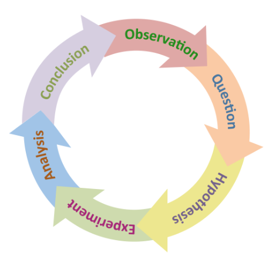
A vector containing 500 (hypothetical) height measurements for adults in Germany:
length(height)
## [1] 500
head(height, n=10)
## [1] 1.706833 1.635319 1.709841 1.707259 1.668659 1.580702 1.608214 1.636738
## [9] 1.649740 1.758209
We want to know their average height:
mean(height)
## [1] 1.976743
Wait... what?
mean(height)
## [1] 1.976743
What happened?
A. mean() is not the right function to assess what we want to know.
B. Adults in Germany are exceptionally tall
C. A decimal point error in one data point.
D. It's a multiple testing problem because we are looking at so many data points (n=500).
See next slide
mean(height)
## [1] 1.976743
What happened?
mean() is not the right function to assess what we want to know.
plot(height)
hist(height)


mean(height)
## [1] 1.976743
A quick way to fix our dataset is to remove our outlier.
fheight <- height[height < 3]
plot(fheight)
hist(fheight)


mean(fheight)
## [1] 1.650043
This is how the broken dataset was generated:
height <- c(rnorm(499, mean=1.65, sd=0.045), 165)
This lecture and the one that follows will cover:
The Grammar of Graphics is a visualization theory developed by
Leland Wilkinson in 1999.
ggplot2 is a powerfull implementation of the grammar of graphics. Plotting with the help of the package ggplot2 has become widely used by R programmers.
Lets see a sophisticated example...
# install.packages('gapminder')
library(gapminder)
gm_dt <- as.data.table(gapminder)[year %in% c(1977, 2007)]
ggplot(data = gm_dt, aes(x = gdpPercap, y = lifeExp)) +
geom_point(aes(color = continent,size = pop)) +
facet_grid(~year) +
scale_x_log10() +
labs(y = "Life expectation at birth", x = "per-capita GDP", size = "Population") +
mytheme
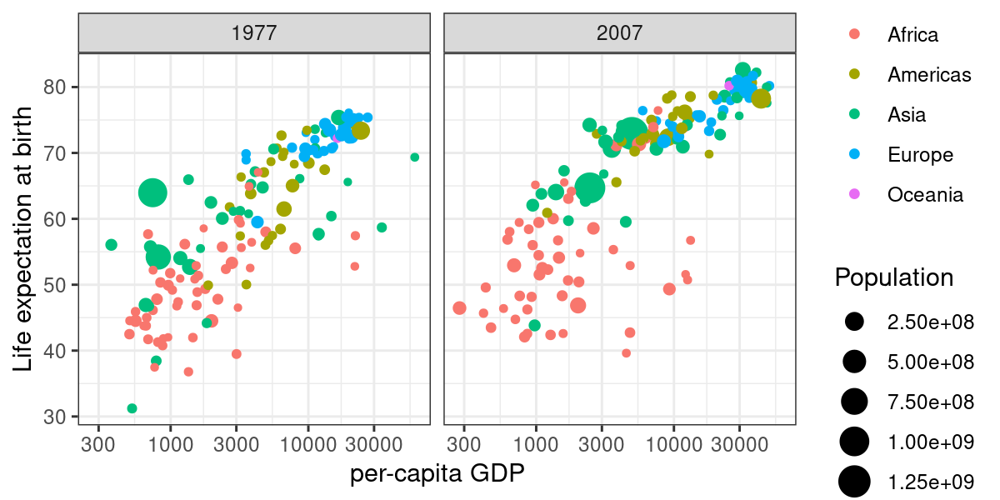
But how we create such a plot step by step?
Data: data.frame (or data.table) object where columns correspond to variables
Aesthetics: describes visual characteristics that represent data (aes)
Layers: made up of geometric objects that represent data (geom_)
Scales: for each aesthetic, describes how visual characteristic is converted to display values (scale_)
Facets: describes how data is split into subsets and displayed as multiple sub graphs (facet_)
Stats: statistical transformations that typically summarize data (stat)
Coordinate system: describes 2D space that data is projected onto (coord_)

Lets have a quick look in our data
head(gm_dt[, .(country, continent, gdpPercap, lifeExp, year)])
## country continent gdpPercap lifeExp year
## 1: Afghanistan Asia 786.1134 38.438 1977
## 2: Afghanistan Asia 974.5803 43.828 2007
## 3: Albania Europe 3533.0039 68.930 1977
## 4: Albania Europe 5937.0295 76.423 2007
## 5: Algeria Africa 4910.4168 58.014 1977
## 6: Algeria Africa 6223.3675 72.301 2007
For starting with the visualization we initiate a ggplot object which generates a plot with background:
ggplot()
This aes() function defines which columns in the data.table object map to x and y coordinates and if they should be colored or have different shapes and sizes based on the values in a different column. These elements are called “aesthetic” elements, which we observe in the plot.
ggplot(data = gm_dt, aes(x = gdpPercap, y = lifeExp))
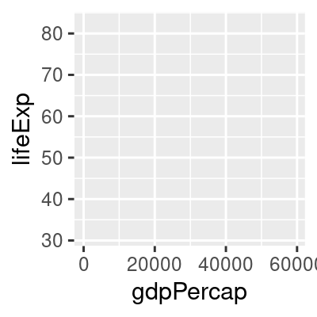
In R, a scatter plot can be plotted with ggplot2 using the function geom_point. We want to construct a
scatter plot containing the gdpPercap on the x-axis and the lifeExp on the y-axis.
ggplot(data = gm_dt, aes(x = gdpPercap, y = lifeExp)) + geom_point()

One of the advantages of plotting with ggplot is that it returns an object which can be stored (e.g. in a variable
called p). The stored object can be further edited and you can also inspect its elements with the names() function:
p <- ggplot(data = gm_dt, aes(x = gdpPercap, y = lifeExp)) + geom_point()
names(p)
## [1] "data" "layers" "scales" "mapping" "theme"
## [6] "coordinates" "facet" "plot_env" "labels"
We can also save the ggplot object with the help of the function saveRDS(). Then, we can read the saved object again with the help of the function readRDS() and add a horizontal line at y=50 to the plot:
saveRDS(p, "extdata/my_first_plot.rds")
p <- readRDS("extdata/my_first_plot.rds")
We can also save the ggplot object with the help of the function saveRDS(). Then, we can read the saved object again with the help of the function readRDS() and add a horizontal line at y=50 to the plot:
p + geom_hline(yintercept = 50)
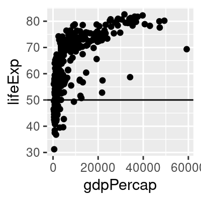
colorWe can easily map variables to different colors, sizes or shapes depending on the value of the specified variable using the aes function.
ggplot(data = gm_dt, aes(x = gdpPercap, y = lifeExp, color = continent)) + geom_point()
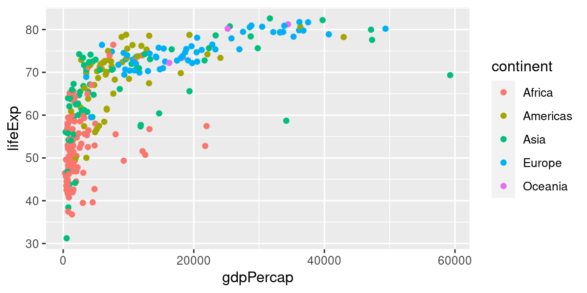
shapeTo change the shape of our points we can override the shape argument of the aes
ggplot(data = gm_dt, aes(x = gdpPercap, y = lifeExp, shape = continent)) + geom_point()
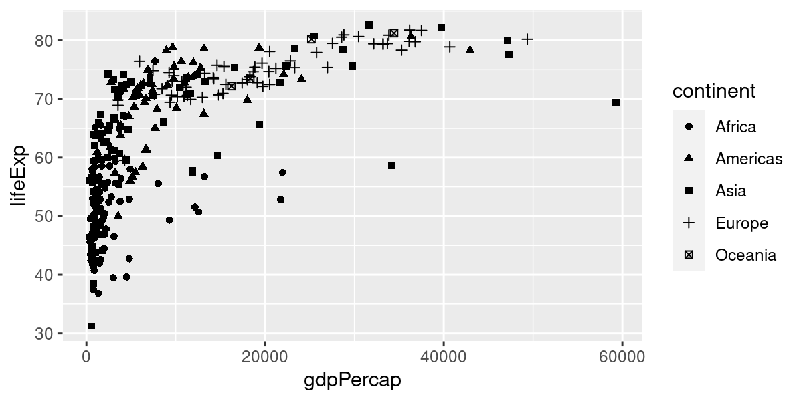
sizeAdditionally, we distinguish the population of each country by giving a size to the points in the scatter plot:
ggplot(data = gm_dt, aes(x = gdpPercap, y = lifeExp, color = continent, size = pop)) +
geom_point()
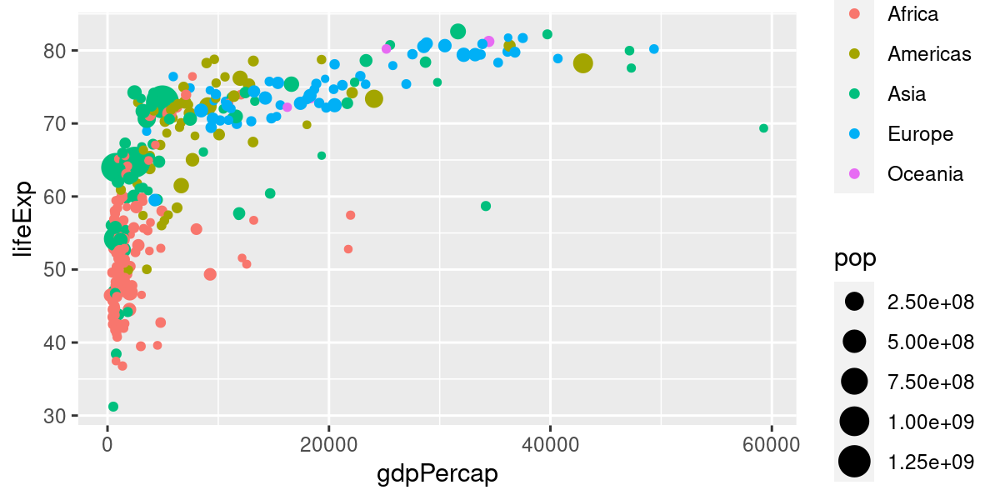
Global mapping is inherited by default to all geom layers (geom_point in the previous example), while mapping at individual layers is only recognized at that layer.
ggplot(data = gm_dt, aes(x = gdpPercap, y = lifeExp)) +
geom_point(aes(color = continent,size = pop))

Individual layer mapping cannot be recognized by other layers. For instance, we can add another layer for
smoothing with stat_smooth().
# this doesn't work as stat_smooth didn't know aes(x , y)
ggplot(data = gm_dt) + geom_point(aes(x = gdpPercap, y = lifeExp)) + stat_smooth()
## Error: stat_smooth requires the following missing aesthetics: x and y
Individual layer mapping cannot be recognized by other layers. For instance, we can add another layer for
smoothing with stat_smooth().
# this would work but too redundant
ggplot(data = gm_dt) + geom_point(aes(x = gdpPercap, y = lifeExp)) +
stat_smooth(aes(x = gdpPercap, y = lifeExp))

Individual layer mapping cannot be recognized by other layers. For instance, we can add another layer for
smoothing with stat_smooth().
# the common aes(x, y) shared by all the layers can be put in the ggplot()
ggplot(data = gm_dt, aes(x = gdpPercap, y = lifeExp, color = continent)) + geom_point(aes(size = pop)) +
stat_smooth()
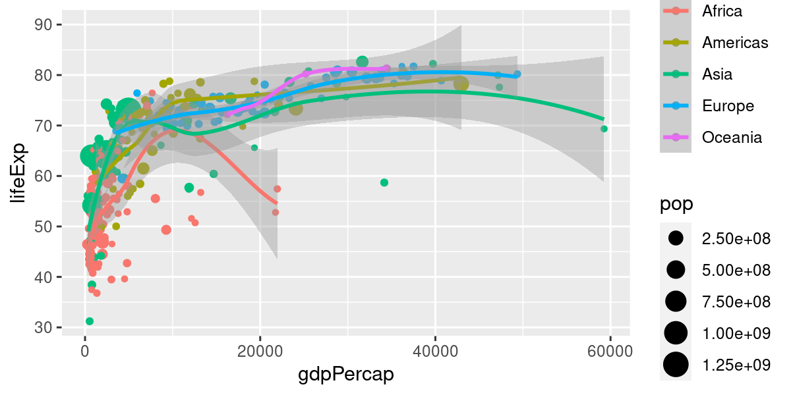
What's the result of the following command?
ggplot(data = mpg)
A Nothing happens
B A blank figure will be produced
C A blank figure with axes will be produced
D All data in mpg will be visualized
ggplot builds plot layer by layer.
Neither variables were mapped nor geometry specified.
What's the result of the following command?
ggplot(data = mpg, aes(x = hwy, y = cty))
A Nothing happens
B A blank figure will be produced
C A blank figure with axes will be produced
D A scatter plot will be produced
ggplot builds plot layer by layer.
Axis x and y are mapped. But no geometry specified.
What's the result of the following command?
ggplot(data = mpg, aes(x = hwy, y = cty)) + geom_point()
A Nothing happens
B A blank figure will be produced
C A blank figure with axes will be produced
D A scatter plot will be produced
ggplot builds plot layer by layer.
Data, axes and geometry specified.
ggplot(data = mpg): a blank figure will be produced
ggplot(data = mpg, aes(x = hwy, y = cty)): A blank figure with axes will be produced
ggplot(data = mpg, aes(x = hwy, y = cty)) + geom_point(): A scatter plot will be produced
In the previous examples, we had a look at scatter plots which are suitable for plotting the relationship between two continuous variables. However, there are many more types of plots (e.g. histograms, boxplots) which can be used for plotting in different scenarios. Mainly, we distinguish between plotting one or two variables and whether the variables are continuous or discrete.
Lets prepare some data for plotting using the Human Development Index (HDI) dataset:
ind <- fread('extdata/CPI_HDI.csv')
head(ind)
## V1 country wbcode CPI HDI region
## 1: 1 Afghanistan AFG 12 0.465 Asia Pacific
## 2: 2 Albania ALB 33 0.733 East EU Cemt Asia
## 3: 3 Algeria DZA 36 0.736 MENA
## 4: 4 Angola AGO 19 0.532 SSA
## 5: 5 Argentina ARG 34 0.836 Americas
## 6: 6 Armenia ARM 37 0.733 East EU Cemt Asia
To plot the values of a vector with continuous values we can use a histogram. A histogram represents the frequencies of values of a variable bucketed into ranges, using the function geom_histogram():
ggplot(ind, aes(HDI)) + geom_histogram() + mytheme

By default, the number of bins in ggplot2 is 30. We can simply change this by defining the number of desired bins
in the bins argument of the geom_histogram() function:
ggplot(ind, aes(HDI)) + geom_histogram(bins=10) + mytheme

Boxplots are well suited for plotting one continuous variable. However, we can also use boxplots to show distributions of continuous variables with respect to some categories. This can be particularly interesting for comparing the different distributions of each category.
ggplot(mpg, aes(class, hwy)) + geom_boxplot() + mytheme

A violin plot is an alternative to the boxplot for visualizing either one continuous variable (grouped by categories). An advantage of the violin plot over the boxplot is that it also shows the entire distribution of the data. This can be particularly interesting when dealing with multimodal data. You can make a violin plot using the geom_violin() function.
ggplot(mpg, aes(class, hwy)) + geom_violin() + mytheme
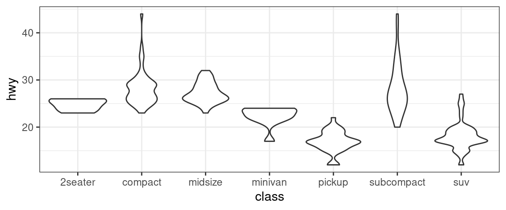
It is possible to not show the outliers. However, we strongly recommend to keep them. Outliers can reveal interesting data points (discoveries "out of the box") or bugs in data preprocessing.
For which type of data will boxplots produce meaningful visualizations? (2 possible answers)
A. For discrete data.
B. For bi-modal distributions.
C. For non-Gaussian, symmetric data.
D. For exponentially distributed data.
For which type of data will boxplots produce meaningful visualizations? (2 possible answers)
For which type of data will boxplots produce meaningful visualizations?
Boxplots are bad for bimodal data since they only show one mode (the median), but are ok for both symmetric and non-symmetric data, since the quartiles are not symmetric.
dt <- data.table(x=c(1,1,1,2,2,2,8,8,8), # Discrete data, bad for boxplot
y=rbeta(n=1000,shape1=2,shape2=2),
z=rexp(n=1000, rate=1),
group='x') %>% melt(id.var="group")
ggplot(dt, aes(group, value)) + geom_boxplot() + facet_wrap(~variable) + mytheme
For which type of data will boxplots produce meaningful visualizations?
Boxplots are bad for bimodal data since they only show one mode (the median), but are ok for both symmetric and non-symmetric data, since the quartiles are not symmetric.

Scatter plots are a useful plot type for easily visualizing the relationship between two continuous variables. To make a scatter plot we use the geom_point() function.
ggplot(mpg, aes(displ, hwy)) + geom_point() + mytheme
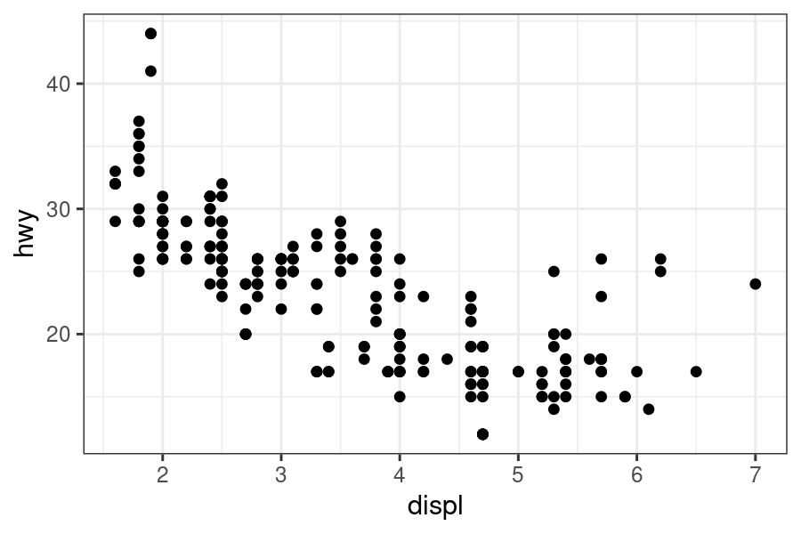
We can modify the previous plot by coloring the points depending on the vehicle class:
ggplot(mpg, aes(displ, hwy, color = class)) + geom_point() + mytheme
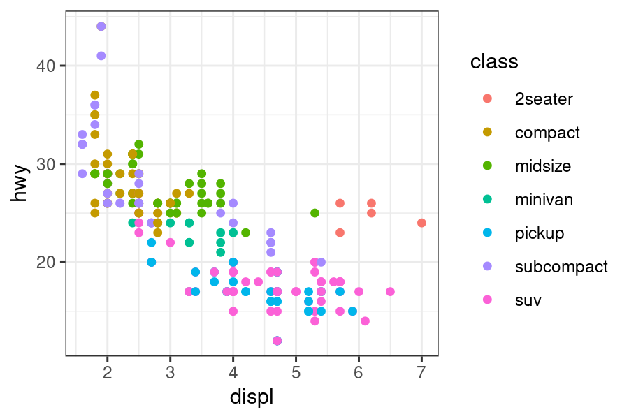
Sometimes, too many colors can be hard to distinguish. In such cases, we can use facet to separate them into different plots:
ggplot(mpg, aes(displ, hwy)) + geom_point() + facet_wrap(~class) + mytheme

A line plot can be considered for connecting a series of individual data points or to display the trend of a series of data points. This can be particularly useful to show the shape of data as it flows and changes from point to point. We can also show the strength of the movement of values up and down through time.
ggplot(economics, aes(date, unemploy/pop)) + geom_line() + mytheme

When to use a line plot?
When to use a line plot?
A To show a connection between a series of individual data points